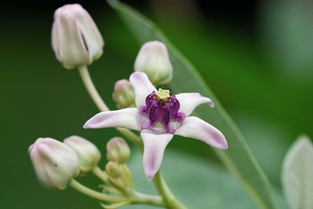
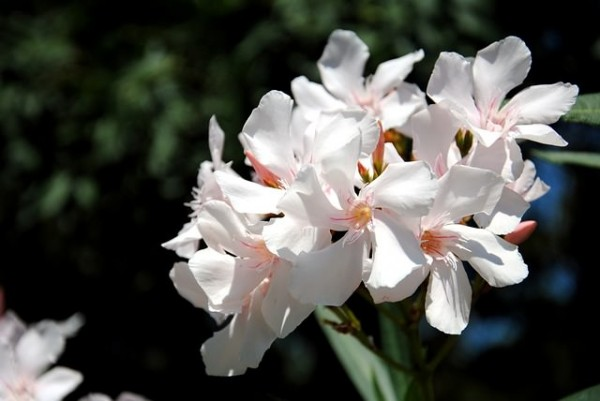

HORTENCIAS
Las hortensias contienen pequeñas cantidades de cianuro y pueden ser peligrosas en una ingesta copiosa. Aunque unas pocas hojas ya pueden dar problemas de vómitos, diarrea y somnolencia a niños y mascotas.
CLEMATIS
La clematis o clemátide puede dar problemas debido a un glucósido irritante, la anemonina. Actúa por contacto tanto en la piel, ocasionando dermatitis, como en las mucosa de la boca, causando ardor leve y úlceras, si se ingiere.
CALOTROPIS
El género Calotropis se compone de tres especies de plantas originarias de las zonas áridas de África y Asia. El látex que exudan las flores y las hojas de estas plantas contiene calotropin que es un citotóxico usado en los tratamientos del cáncer y que en contacto con los ojos puede causar ceguera.
ADELFAS
Las adelfas son arbustos mediterráneos que producen flores muy llamativas en colores blanco, rosa, amarillo o rojo. Ingerir una pequeña parte de la planta, flor, hojas o cualquier otra puede causar fiebre, deshidratación, bradicardia e incluso la muerte.
AZALEAS
Las preciosas azaleas y rododendros que tan bien decoran cualquier jardín provocan náuseas, dolor abdominal y dificultad para respirar si se ingieren.
NARCISOS
En el caso de los narcisos sólo son los bulbos los que pueden producir vómitos y diarrea así como trastornos del ritmo cardíaco. Hay que tener especial cuidado pues con los perros que pueden escarbar el suelo y consumir dichos bulbos.
Las Flores Curativas